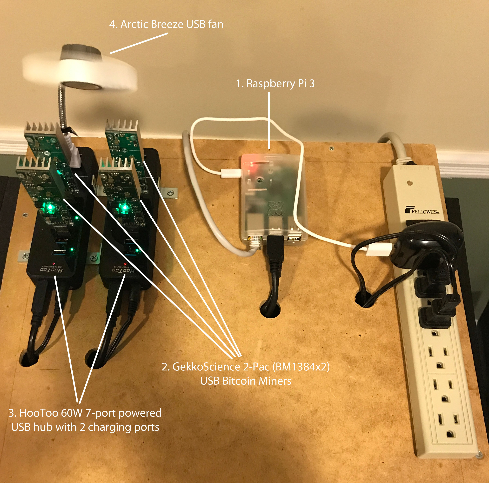

And Now for Something Completely
Different...
By Jim Connors 5 September 2017
To steal a phrase from Monty
Python's Flying Circus, this article represents a
departure from the standard fare. Today, I'd like to
discuss my foray into the Bitcoin
world, and in particular, how contributing (in an infinitesimally
small but meaningful way) strengthens the decentralized
Bitcoin network. In short, I have become a Bitcoin
miner. Before going any further, let me be perfectly clear:
there is no gold in them thar' hills. Unless you plan
on mining on an industrial scale where electricity is
plentiful and more importantly, cheap, you will likely
achieve a negative return on your investment. But it's
still fun to do.
Overview
My Humble Bitcoin Mining Rig
Creating and Configuring a Bitcoin Mining Rig
Return on Investment?
Overview
The revolutionary idea behind Bitcoin is the fact that its transactions are verified in a decentralized fashion free from manipulation by governments and banks. The more systems on the network that participate in the verification, the less likely any one entity has the ability to take a majority stake and threaten the ecosystem. To encourage participation, verifiers, otherwise known as miners, are periodically rewarded with Bitcoins. Bitcoin mining draws parallels to precious metal mining in that (1) the resource is scarce and finite (only 21 million will ever be issued) and (2) mining is labor intensive.
Miners compete for winning Bitcoins that are periodically released by both verifying transactions and solving complicated mathematical hashing calculations. Obviously grossly oversimplified, you can begin to better understand the concept of mining here. The organizations with the most computing power have the best odds at winning the Bitcoin lottery. You can, of course, attempt to go it alone and compete with the rest of the world in trying to win Bitcoins, but the odds of doing so are very, very slim. Instead nowadays it probably makes more sense to join one of a number of large mining pools that share resources and consequently share in the overall pool's success. In a pool you receive a payout commensurate with your percentage contribution to that pool.
My Humble Bitcoin Mining Rig
The image that follows, along with the subsequent description of the component parts, describes the rig.

Creating and Configuring a Bitcoin Mining Rig
Once the requisite hardware is gathered, there are a few general steps required to get up and running:
This text file describes the steps needed to set up the rig described in this article. In terms of choosing a Bitcoin wallet and mining pool there are a multitude of choices. Electrum and Slush Pool were chosen respectively for the rig you see here.
Return on Investment?
Is mining a money making enterprise? At this small scale, absolutely not. Ignoring the non-trivial upfront capital cost of the hardware required to run this rig, you're likely to spend more in electricity than you could accrue in Bitcoin. The price of Bitcoin is so volatile, and the amount of hashing power that contributes to the network changes (generally increasing over time) that any metrics provided here would only be relevant for one point in time. But what the heck. At the current time, based upon my contribution to the Slush Pool mining pool, my rig is rewarded approximately .000035 Bitcoins a day. As of the writing of this article, the current price of Bitcoin is about $4300 US. Doing the arithmetic yields a reward of about $0.15 US a day. It costs more in electricity each day (especially in New York) to power a 50 Watt rig.